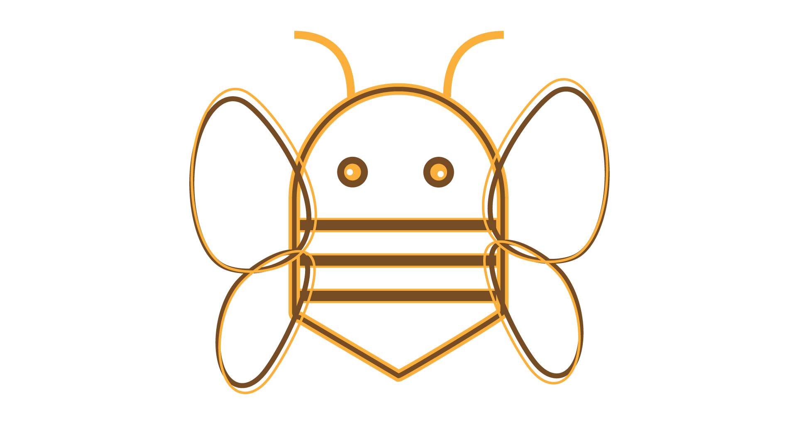

Illustrator Bee Design


For my ‘Save the Bees’ social campaign photo-collage, I decided to make a simple outline of a bee’s body in Adobe Illustrator and then transfer it over to Photoshop, to lay it over my entire drafted design. In Illustrator, I didn’t use much fill for my shapes, mostly just stroke to create an outline of the bee, so that the PNG would have plenty of ‘open’ space when I laid it over my collage. Even when I did overlay it, it made the text kinda illegible, so I messed around with the blending modes of the smart object so that you could still read the ‘Save the Bees’ text and still also see the large, all-encompassing shape of a bee and its eyes.